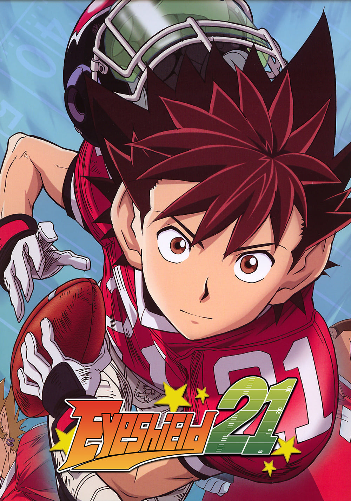

등급 : 7세 이상
평점 :
편성 : 145부작
TV 만화

심약한 성격으로 인해 중학교 시절부터 원치 않게 불량학생 패거리의 심부름 부하를 해 온 코바야카와 세나.
그는 데이몬 고교로 진학한 후 미식축구부에 총무로 입부하게 된다. 그러나 그간 도망쳐 다니느라 단련된
빠른 다리를 히루마에게 들키면서 반강제로 아이실드 21이라는 코드 네임으로 미식축구 시합에 참가하게 된다.
이후 몬타, 유키미츠 등의 신입부원들과 함께 세나는 승리의 기쁨과 패배의 분함, 용기를 배워가며 성장한다.
<OTT>
 티빙
티빙
 왓챠
왓챠
 웨이브
웨이브